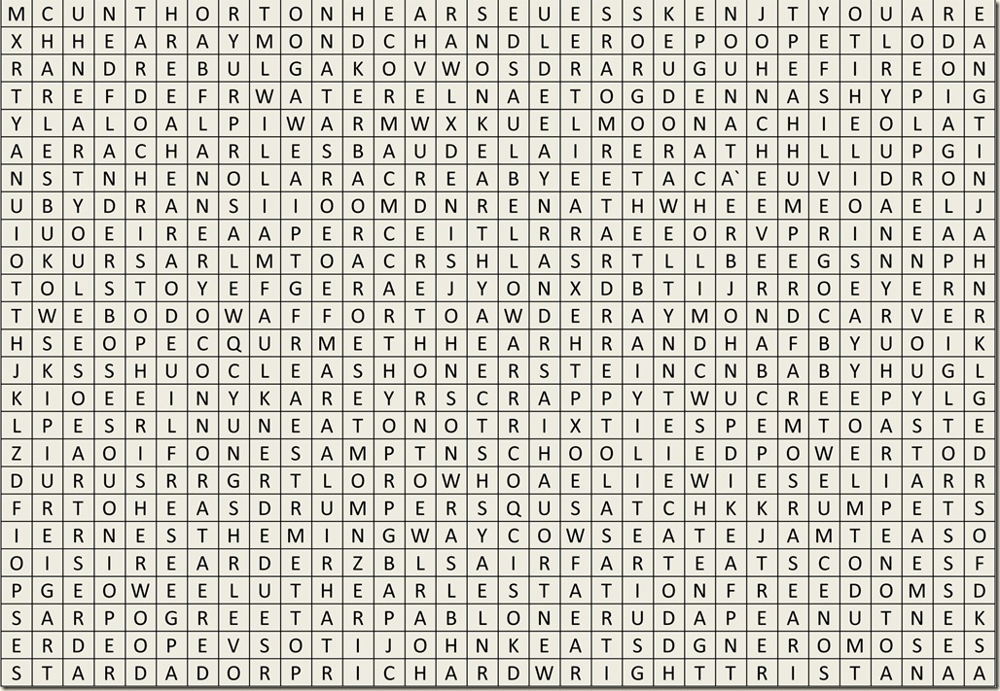

Author Word Find: Gotta Catch Them All

Find and circle all the famous authors that are hidden on the grid below. Click to enlarge. Don’t blow out your eye drums squinting.
{kind=link}

| William Faulkner Ogden Nash Charles Baudelaire Tolstoy Raymond Carver Elie Wiesel Cormac McCarthy Denis Johnson Charles Bukowski Pablo Neruda Eudora Welty | Saul Bellow Ayn Rand Chrisopher Isherwood Flannery O’Connor Goethe John Cheever Raymond Chandler Ernest Hemingway John Keats Richard Wright |
P.S. You can just circle the author’s names on your screen with a sharpie. Your monitor is getting old anyway.
Click below for the answer key.

Click above for answer key.
Related posts

Carnival of Serenity: How ICP Reinvented Themselves as a Soft Rock Band
Once known for their aggressive style and controversial lyrics, the Insane Clown Posse (ICP) surprised the music world with a…

Department Store Santa's Hurtful Words Scar Children
Department store Santa’s are known to victimize and terrorize children and adults alike. The classic image of a child crying…

Robot King Decrees: Exfoliate them. All of them!
When the Robot King decrees, “Exfoliate them. All of them!” the sponge bots obey. Since they are sponge bots not…

Local Authorities Warn of Serial Slapper
LOCAL AREA, USA. Authorities in our local area are warning residents to be on alert for a serial slapper. This…